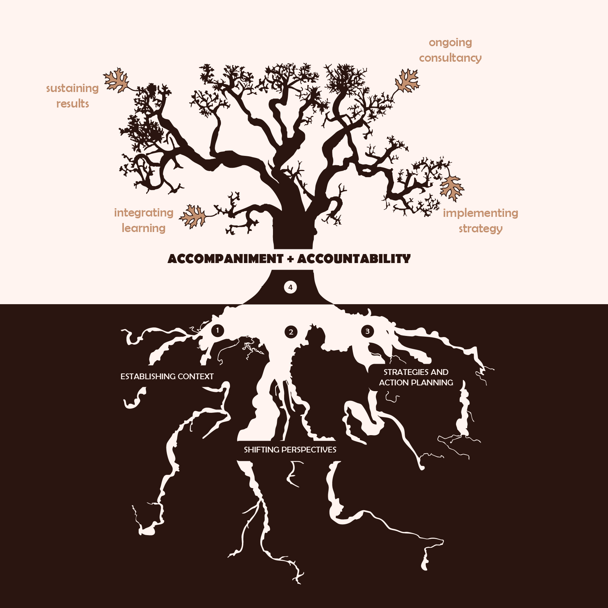
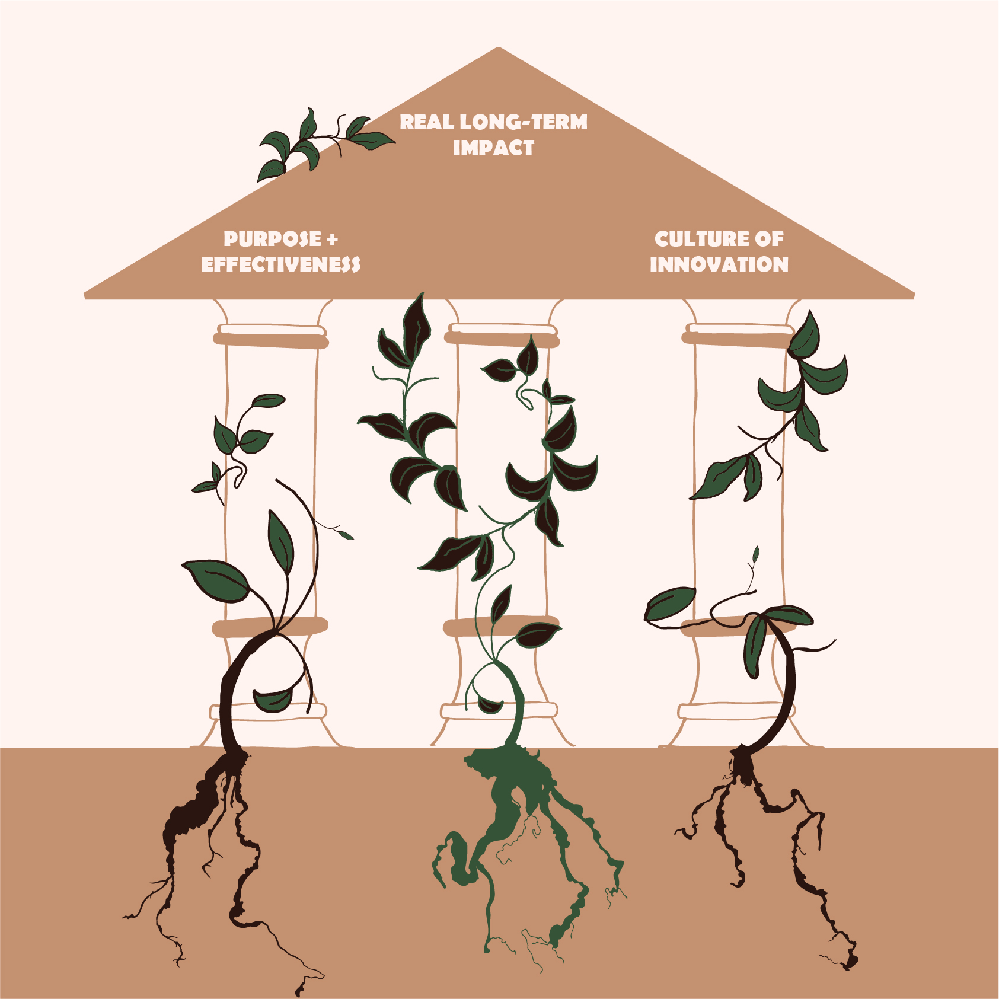

Information design for Think Differently: Applying permaculture to businesses, organisations, and life
Barcelona, Catalunya
2026 - current


Think Differently
Information design
Sessions with team solidifying core visions and language
Framework for internal communication
Adobe Suite
Hand-drawn assets
This is an ongoing collaboration with Think Differently. Alongside my internal communications work with them, I have been designing these information graphics that help communicate their methodology. These are for thhe organization to share in their instagram, linked-in, website, and presentations.
I use fauna as a metaphor for the growth of their clients within and beyond the training they offer, highlighting their use of biomimicry and nature-based design.
The pillars of the Think Differently organization and teaching, is represented here as the backbone of the clients growth.
Ongoing support in the implementation of the methodology is crucial in the work Think Differently does. I represent this in the metaphor of a tree system growing, where the root system makes the supported client implementation possible.